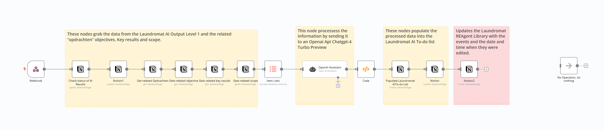
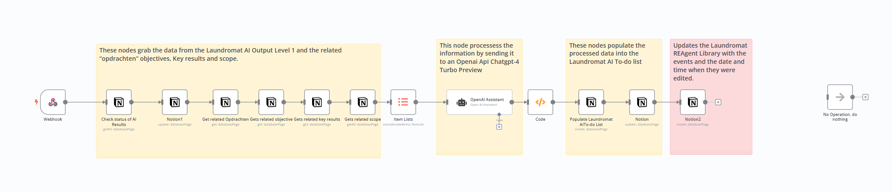

During the Realisation phase, I focused on bringing the proposed concepts to life by leveraging low-code platforms such as N8N and Notion, along with integrating OpenAI assistants. This phase involved developing a functional prototype that demonstrates the practical applications and benefits of generative AI in enhancing workflow processes.
N8N was selected as the backbone for automation and workflow management due to its powerful low-code environment. It allowed me to connect and automate various tasks and data points across different systems seamlessly. N8N's flexibility and robust capabilities were crucial in setting up workflows that handle data retrieval, processing, and task automation. For more details, refer to the N8N and Notion Documentation.
 


Notion served as the central database, organizing and storing all project-related information in a structured and user-friendly format. Its visual interface made it easy to manage complex data structures and ensured that all team members had easy access to necessary information. This integration with N8N facilitated the smooth flow of data and efficient task management. For more details, refer to the N8N and Notion Documentation.
The system diagram below illustrates how N8N and Notion work together, with OpenAI assistants integrated to enhance the overall functionality. The diagram shows the data flow and interactions between different components, highlighting how tasks are automated and managed. For a detailed view, see the System Diagram.

OpenAI assistants were integrated to perform specific tasks such as data analysis, content generation, and providing actionable insights. These AI-driven assistants leveraged large language models (LLMs) to process and analyze large amounts of information, offering valuable support in breaking down complex tasks and enhancing overall productivity. For more details, refer to the OpenAI Assistants Documentation.